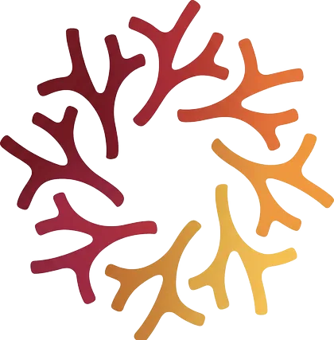

Lead Author
A Framework for Complex Question Answering
A planner-free multi-agent framework that reasons over tables, text, and images through a shared natural-language log.
Complex question answering across heterogeneous sources requires both specialization and coordination. DeALOG replaces the brittle central planner of conventional agent pipelines with a lightweight scheduler and a shared, auditable log — letting specialist agents contribute, verify, and correct one another without a single point of failure. The result: competitive accuracy on six benchmarks, graceful degradation under 30% evidence corruption, and transparent reasoning you can actually inspect.

CoRAL Lab